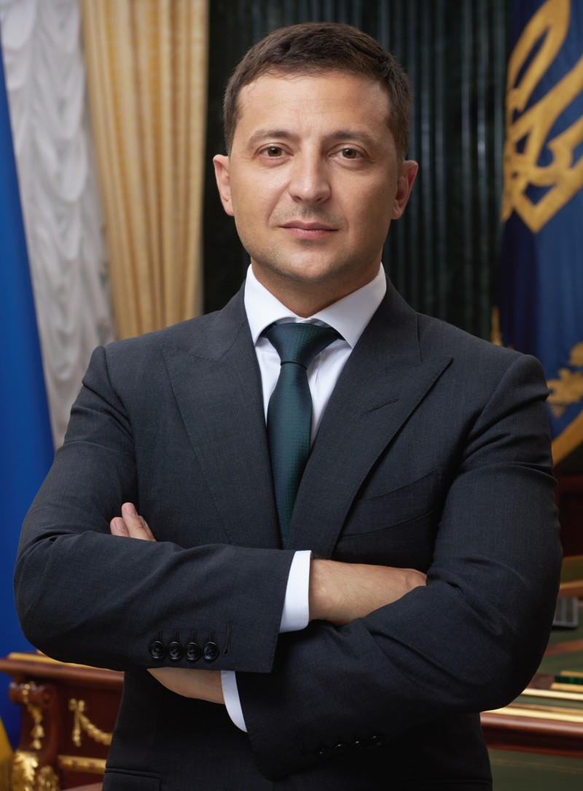

Влади́мир Алекса́ндрович Зеле́нский — украинскийгосударственный и политический деятель. Президент Украины с 20 мая 2019. Верховный главнокомандующий Вооружённых сил Украины. До избрания президентом получил широкую известность как шоумен, актёр, комик, режиссёр, продюсер и сценарист. Был совладельцем и художественным руководителем «Студии Квартал-95» (2003—2019) и генеральным продюсером телеканала «Интер» (2010—2012).
